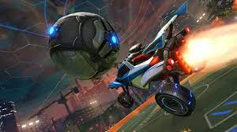

To play rocket league at a high level requires a high understanding of the game and all the aspects involved in it. Much of this knowledge is game sense as this is what is mainly required. Mechanics will be needed later but can be unnecessary. These ten tips are high level tips that are given by many high level player, Thanovic, SpookLuke and many other Rocket League coaches included.
Here Are My Top 10.
1. Play The Game
Playing the game can help a new player or even a more experienced player to improve as putting in hours builds experience. Gaining experience in something increases your understanding of that topic, and this helps you to improve faster. This applies to rocket league as a big part of the game is muscle memory, and the only way to learn and gain experience in this is to put time into it.
2. Good Settings
Good settings is a quick and easy way to get a lot better as it means that you can properly see your surroundings and the current things that are happening in the game. An easy way to find good settings is to search up a pro such as Zen's camera settings and copy those. Personally I use Monkey Moon's camera settings, a previous world champion.

3. Freeplay!
Free play will give you the chance to set up the shot for yourself and it also gives the most time on the ball out of any other game mode. Time on the ball means that you can get help improve all aspects of the game, as it is a game centered around the control of the ball
4. Rank does not matter
Your rank does not matter! You may be improving a lot but your rank is decreasing, this is not a problem. Once you have gotten good enough, you will be able to easily climb back to you rank and even further. Worrying about your rank just makes it harder to concentrate and improve.
5. Play 1v1
1 v 1 games give you the most amount of time on the ball, and more time on the ball means more time to improve. In 1's every mistake that you make could mean a goal and this highlights the mistakes so that you wont make them next time. Playing ones is a quick, whilst annoying, way to rank up and improve fast.
6. Learn a good kickoff
Kickoffs happen in every single game that you ever play, so without a good kickoff, games are going to extremely hard to win, especially as you climb the ranks. There are many kickoffs and some are more complicated than others. Most ranks will just need a front flip or diagonal flip kickoff, usually up until about champ this is viable. But higher ranks will use a speedflip as that is the only way to stand a chance in a kickoff.
7. Watch pro gameplay
Watching pro gameplay can help you to get better as you are able to see how the people that are the best at the game play the same game as you. You can watch their speed, how the move around the field and their general playstyle to help improve your own.
8. Don't flip around the field
When you are in the middle of a flip, you can't change speed or direction, meaning if you are in the middle of a flip, you can't challenge, shoot, turn or do anything until the flip finishes. Not flipping around the field means you are always ready for whatever happens, whether it is the right time to challenge, shoot or change trajectory.
9. Don't hesitate
Don't hesitate! Even a bit of hesitation could mean that an opponent beats you to the ball, think of what you are doing and stick to it, don't second guess yourself. If you stick to your first choice then whatever you do, it will happen earlier and faster, challenging the ball or going for an aerial.
- 
Conclusion
This page showed 10 tips to help you improve at Rocket League, tips that have been used by many high level players including pros and recommended by many of them. By applying these tips into your gameplay and practice, you can quickly improve and develop your level of game. There are many more tips that can help you to improve more but these are my main, yop 10 tips that I have found to work the best. Rocket League is a difficult game that requires time and thought to be put into it if you want to see improvement but it is very possible to improve dramtically, even with just these tips.